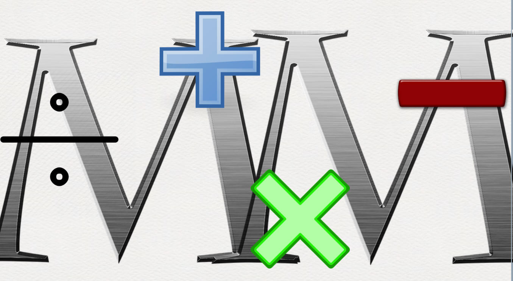

Math Manatee
Welcome to Math Manatee. Here we specialize in math for grades 6-7

Grade 6
In 6th grade generally the topics you will most likely see are:
- Adding, Subtracting, Multiplication, and Divison of Deciamls
- Adding, Subtracting, Multiplication, and Divison of Fractions
- Understanding Number Sense with Whole Numbers and Integers
- Area of Two-Dimensional Shapes
- Surface Area
- Volume of Prisms
- Understanding of Expressions, Equations, and Inequalities
- Finding the Mean, Median, Mode, and Range of Data
- Creating and interpreting Bar, Line, Circle, and Histograms
- Writing, Comparing, and solving problems using Ratios, Rates, and Percents
- Finding Probability using Outcomes, Tree Diagrams, and the Counting Principles
- The following videos explain how to Add and Subtract Decimals: Video
- Multiplying Decimals Instructional Video: Video
- Dividing Decimals Instructional Video (whole divisors): Video
- Dividing Decimals Instructional Video (decimal divisors): Video
- DECIMAL REVIEW: Video
- The following video explains how to Add and Subtract Fractions Instructional Video: Video
- Multiplying Fractions Instructional Video: Video
- Dividing Fractions Instructional Video: Video
- FRACTION REVIEW: Video
- The following video explains number sense with whole numbers and integers: Video
- The following video explains how to find the area of two-dimenisonal shapes: Video
- The following video explains how to find the volume of prisms: Video
- The following video explains the basics of understanding expressions, equations, and inequalities:Video
- The following video explains how to find the mean, median, mode, and range of data: Video
- The following video explains how to create and interpret bar, line, circle graphs, and histograms: Video
- The following video explains how to write, compare, and solve problems using ratios, rates, and percents: Video
- The following video explains how to find probabiltiy using outcomes, tree diagrams, and the counting principles: Video
- Probablilty: Video 1
- Probablilty: Video 2
- Probablilty: Video 3
Grade 7
In 7th grade generally the topics you will most likely see are:
- Adding, Subtracting, Multiplication, and Divison of integers
- Adding, Subtracting, Multiplication, and Divison of rational numbers
- Equations and Expressions
- Inequalities
- Ratios and Proportions
- Percents
- Constructions and scale drawings
- Circles and Area
- Surface Area and Volume
- Probablilty and Statistics
- Transformations
- Angles and Triangles
- Graphing and Writing Linear Equations
- Real numbers and the Pythagorean Theorem
- Volume and similar solids
- Exponents and Scientific Notation
- The following videos explain how to add, subract, multiply, and divide integers: Video
- The following video explains how to add, subtract, multiply, and divide rational numbers: Video
- The following video explains the basics of equations and expressions: Video
- The following video explains the basics of inequalities: Video
- The following video explains ratios and proportions: Video
- The following video explains percents: Video
- Adjacent and Vertical Angles: Video
- This video explains scale drawings: Video
- The following video explains complementary and supplementary angles: Video
- The following video explains quadrilaterals at a 7th grade level: Video
- The following video explains Triangles at a 7th grade level: Video
- The following video explains circles and area: Video
- The following video explains surface area and volume: Video
- Experimental Probablilty: Video
- Compound events: Video
- Theoretical probability: Video
- Independent and Dependent Events: Video
- Transformations: Video
- Triangles: Video
- Angles: Video
- Writing Linear Equations: Video
- Graphing Linear Equations: Video
- Real Numbers: Video
- Pythagorean theorem: Video
- Volume of shapes: Video
- Similar Solids: Video
- Exponents and Scientific Notation: Video 1
- Exponents and Scientific Notation: Video 2
Video Credits:
Math With Mr. J
Nerd Study
Math Antics
VividMath
Khan Academy
The Organic Chemistry Tutor
Eri Buffington
Mario's Math Tutoring
The Bearded Math Man
Time To Learn Education
mathwithmsgriffin
Danielle Sabia
BroandSisMathClub
David Hays
Don't Memorise
Math Meij
Website Credits:
Alayna Donnell
Mikaela Dassanaike-Perera
Sophia Karki